전기철도기사 (2015-03-08 기출문제)
1과목: 전기철도공학
1. 직류강체 저차선로 방식에서 T-Bar에 전차선이 잘 밀착되도록 연속적으로 고정시키는 연결금구는?
- 휘드이어
- 볼트
- 절연매립전
- 롱이어
(정답률: 100%)

2. 전차선의 편위에 대한 설명으로 옳은 것은?
- 팬터그래프 집전판의 고른 마모를 위하여 지그재그 편위를 한다.
- 전차선의 궤도 중심면에서의 수직거리를 편위라고 한다.
- 강풍구간, 터널 등 특수구간에서는 편위는 400mm 이내로 시설한다.
- 전차선의 편위는 궤도중심선에서 좌우 100mm를 표준으로 한다.
(정답률: 95%)
3. 교류변전설비의 급전구분소에서 선로조건이 나빠 급전용량을 증대할 필요가 있을 때 차단기를 투입하여 양측변전소의 변압기가 병렬운전하는 조건으로 거리가 먼 것은?
- 변압기 1,2차의 정격전압 및 극성이 같을 때
- 두 변압기의 권선비가 같을 때
- 두 변압기의 백분율 임피던스가 같을 때
- 양쪽 변전소 전원의 위상차가 6° 이상일 때
(정답률: 93%)
4. 순환전류에 대한 설명으로 거리가 먼 것은?
- 주회로(전차선) 이외의 전선, 가선금구 등에 흐르는 전류이다.
- 균압방식을 사용하여 순환전류에 따른 사고를 막는다.
- 가압빔, 진동방지장치 등 직접 전선과 연결되고 있는 가선금구는 완전접속 또는 절연한다.
- 순환전류는 귀선로에서만 발생한다.
(정답률: 100%)
5. 보호선(P.W)에 대한 설명으로 거리가 먼 것은?
- 전자유도현상을 증가시킨다는 단점이 있다.
- 지지물 등의 접지 전위 상승을 억제한다.
- 사고시 전차선로 보호를 목적으로 하고 있다.
- 지지물에 설치되어 있는 애자의 섬락을 보호하기 위한 전선이다.
(정답률: 93%)
6. 교류 R-bar 강체 전차선 방식에서 이행 구간에 설치되는 장치는?
- 확장 장치
- 직접 유도 장치
- 구분 장치
- 고정점 장치
(정답률: 67%)
7. 전기철도용 스코트결선 변압기에서 M좌의 부하가 100A라면 T좌에 걸리는 부하는 약 몇 A 인가?
- 50
- 87
- 100
- 1⑤
(정답률: 86%)
8. 3상인 수전전력을 단산 전기철도 급전 전력으로 변환하며 3상인 전원에 대한 불평형을 경감하기 위해 사용하는 변압기는?
- 스코트변압기
- 3권선변압기
- 단권변압기
- 2권선변압기
(정답률: 86%)
9. 교류전차선로의 지락고장 발생 시 고장 검출을 하기 위한 계통의 보호방식이 아닌 것은?
- 보호선
- 가공지선
- 매설지선
- 피뢰선
(정답률: 80%)
10. 전차선(원형 110mm2)의 잔존 단면적이 67.6mm2, 잔존 지름이 7.5mm, 안전율이 2.2일 때 전차선의 허용장력은 약 몇 kgf 인가? (단, 이 전차선의 파괴강도는 35kgf/mm2 으로 한다.)
- 745
- 946
- 1075
- 1183
(정답률: 78%)
11. 고속철도 전차선의 사전 이도량 54/2000에 대한 2번째 드로퍼의 처짐량은 얼마인가? (단, 전차선의 사전 이도구간 길이는 45m, 첫 번째 드로퍼 거리는 4.5m, 두 번째 드로퍼 거리는 11.25m 이다.)
- 0.01077m
- 1.01177m
- 0.01277m
- 0.01377m
(정답률: 88%)
12. 금속체가 레일에 대하여 높은 전위에 있는 경우에만 전류를 유출시키는 방법이며 전식방지에 널리 사용하는 방식은?
- 직류 배류 방식
- 선택 배류 방식
- 강제 배류 방식
- 간접 배류 방식
(정답률: 79%)
13. 전차선의 질량이 1.511kg/m, 장력이 1500kgf 일 때 이 전차선의 파동전파속도는 약 몇 km/h 인가?
- 245
- 295
- 355
- 410
(정답률: 84%)
14. 조가선과 전차선을 경간 중앙에서 교차되돌고 각 지지점에서 각기 다른 편위를 갖돌고 하는 전차선로의 조가방식은?
- 연 사조식
- 경 사조식
- 반 사조식
- 강체 조가식
(정답률: 69%)
15. 강체가선방식(R-bar)의 최대 이도 f를 구하는 식은? (단, ga+ge : R-bar와 전차선의 중량[N/m], a : R-bar의 지지 경간[m], Ea : 탄성계수[N/mm2], Iy-y : y-y축의 관성모멘트[cm4] 이다.)
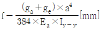
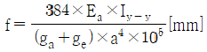
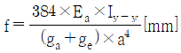
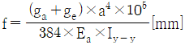
(정답률: 100%)
16. 에어조인트의 평행부분에서 전차선의 상호간격을 얼마를 표준으로 하는가? (단, 속도등급 200킬로급 이하)
- 150mm
- 280mm
- 300mm
- 400mm
(정답률: 85%)
17. 단권변압기 방식에서 보호선의 설치 목적이 아닌 것은?
- 급전선이나 전차선용 애자의 섬락사고 발생시 금속회로를 구성
- 변전소의 차단기를 차단시켜 애자류의 파손사고를 방지
- 지락사고로 인한 지지물 등의 접지전위 상승 억제
- 레일의 전위상승 효과
(정답률: 100%)
18. 가공전차선로의 기계적 구분 개소(에어조인트)에 사용되는 커넥터로 맞는 것은?
- M-M-T-T커넥터
- T-T-M-M커넥터
- M-T-M-T커넥터
- T-M-M-T커넥터
(정답률: 93%)
19. 25kV 교류강체방식의 브래킷 부품 중 편위 조정을 위하여 R-bar의 위치를 변경 할 수 있도록 만든 금구는?
- 꼬리금구
- 머리금구
- 회전금구
- 접지봉연결금구
(정답률: 85%)
20. 고속철도 전차선의 지지점에서 편위가 없다면, 경간의 중심에서 곡선의 편위값 F를 구하는 식은? (단, L은 경간의 길이, R은 곡선반경)
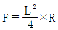
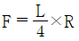
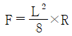
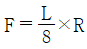
(정답률: 69%)
2과목: 전기철도 구조물공학
21. 지름 40mm, 길이 2m인 봉강에 18t의 인장력이 작용하여 6mm가 늘어났다면 이 때의 인장응력은 약 몇 kgf/cm2인가?
- 358
- 698
- 1433
- 2864
(정답률: 43%)
22. 그림과 같은 구조용 강재의 단면2차반경(회전반지름)이 5cm일 때 세장비는?(오류 신고가 접수된 문제입니다. 반드시 정답과 해설을 확인하시기 바랍니다.)
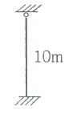
- 200
- 180
- 160
- 140
(정답률: 54%)
23. 철근콘크리트 전주의 안전율은 파괴하중에 대하여 얼마 이상인가? (단, 기존지반)
- 2 이상
- 2.2 이상
- 2.5 이상
- 3 이상
(정답률: 86%)
24. 그림과 같은 단면에서 지름 3cm 원을 떼어 버린다면 도심축 X축에 대한 단면2차 모멘트는 약 몇 cm4 인가?
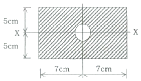
- 1002
- 1154
- 1176
- 1225
(정답률: 75%)
25. 볼트의 지름이 16mm, 볼트의 허용전단응력이 120MPa 일 때, 볼트의 최대 허용 전단력[kN]은?
- 12.1
- 24.1
- 30.5
- 48.0
(정답률: 57%)
26. “평균풍속”의 정의로 옳은 것은?
- 관측시각 전 3분간의 바람의 정도를 시간(180초)으로 나눈 값
- 관측시각 전 5분간의 바람의 정도를 시간(300초)으로 나눈 값
- 관측시각 전 7분간의 바람의 정도를 시간(420초)으로 나눈 값
- 관측시각 전 10분간의 바람의 정도를 시간(600초)으로 나눈 값
(정답률: 67%)
27. 가공전차선로의 인류용 전주에 단지선을 설치하는 경우 지선용 재료의 항장력[P]를 구하는 산출식은? (단, T : 수평외력[kgf], θ : 지선이 전주와 이루는 각도, 지선의 안전율은 2.5)
- P ≥ 2.5T × tanθ
- P ≥ 2.5T × cosθ
- P ≥ 2.5T × sinθ
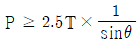
(정답률: 79%)
28. 볼트의 지름이 16mm, 부재판의 두께가 10mm인 볼트 연결부에서 인장하중 32kN이 작용하고 있을 때, 이 볼트 연결부의 지압응력 σp[MPa]은?
- 100
- 200
- 300
- 400
(정답률: 58%)
29. 바깥지름 d1, 안쪽지름이 d2인 원통형 단면에서 단면의 중심축에 대한 단면2차 극모멘트[cm4]는?
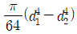
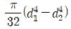
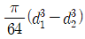
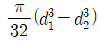
(정답률: 62%)
30. 다음 라멘구조물의 부정정차수는?
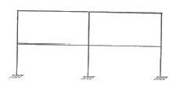
- 12차
- 13차
- 15차
- 18차
(정답률: 69%)
31. 그림과 같은 보의 중앙부 C점에서의 휨모멘트는?
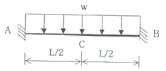
- wL2 / 6
- wL2 / 12
- wL2 / 24
- wL2 / 48
(정답률: 77%)
32. 정육강형틀의 각 절점에 그림과 같이 하중 P가 작용할 때 각 부재에 생기는 인장응력의 크기는?
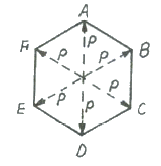
- P
- 2P
- 2/P
- P/√2
(정답률: 91%)
33. 사각형 단면을 가진 기초에 수직하중 200N이 작용하고 있다. 기초 지반의 허용지내력이 200N/cm2일 때 기초의 최소면적[cm2]은?
- 1
- 2
- 3
- 4
(정답률: 75%)
34. 길이가 10m인 강재구조물에 온도가 10℃에서 50℃로 상승했을 때, 온도에 의한 구조물의 신축량[mm]은? (단, 강재의 열팽창계수는 1.0×10-5/℃ 이다.)
- 0.04
- 0.4
- 4
- 40
(정답률: 67%)
35. 질량이 2ton 인 물체에 작용하는 중력[kN]은?
- 9.8
- 19.6
- 24.5
- 29.6
(정답률: 95%)
36. 전차선 평행개소 등에서 1본의 전주에 2개의 가동 브래킷을 지지하기 위한 구조는?
- 평행틀
- 지선
- 하수강
- 애자
(정답률: 64%)
37. 단면의 폭이 15cm, 높이가 h인 직사각형 단면에서 단면계수가 1000cm3일 때, 높이 h[cm]는?
- 10
- 20
- 30
- 40
(정답률: 65%)
38. 힘의 3요소가 아닌 것은?
- 크기
- 방향
- 모멘트
- 작용점
(정답률: 94%)
39. 가동 브래킷의 호칭이 G3.0 L960 0 일 때 L은?
- 가고
- 건식게이지
- 작용력에 대한 형
- 표준높이
(정답률: 79%)
40. 탄성계수 E와 변형률 ε와의 관계는?
- E와 ε는 비례
- E는 ε에 반비례
- E는 ε의 제곱에 비례
- E는 ε의 제곱에 반비례
(정답률: 59%)
3과목: 전기자기학
41. Qℓ = ±200πεo×103(C·m)인 전기쌍극자에서 ℓ과 r의 사이 각이 π/3이고, r=1m 인 점의 전위(V)는?
- 50π × 104
- 50 × 103
- 25 × 103
- 5π × 104
(정답률: 36%)
42. 진공 중에 있는 반지름 a(m)인 도체구의 정전용량(F)은?
- 4πε0a
- 2πε0a
- aε0a
- a
(정답률: 67%)
43. 자계의 벡터포텐셜을 A라 할 때 자계의 변화에 의하여 생기는 전계의 세기 E는?
- E = rot A
- rot E = A
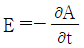
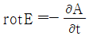
(정답률: 77%)
44. 반지름이 5mm인 구리선에 10A의 전류가 흐르고 있을 때 단위시간당 구리선의 단면을 통과하는 전자의 개수는? (단, 전자의 전하량 e = 1.602×10-19C 이다.)
- 6.24 × 1017
- 6.24 × 1019
- 1.28 × 1021
- 1.28 × 1023
(정답률: 72%)
45. 60Hz의 교류 발전기의 회전자가 자속밀도 0.15Wb/m2의 자기장 내에서 회전하고 있다. 만일 코일의 면적이 2×10-2 m2일 때 유도기전력의 최대값 Em=220V가 되려면 코일을 약 몇 번 감아야 하는가? (단, ω = 2πf = 377 rad/sec 이다.)
- 195 회
- 220 회
- 395 회
- 440 회
(정답률: 67%)
46. 투자율을 μ라 하고 공기 중의 투자율 μ0와 비투자율 μs의 관계에서
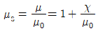
로 표현된다. 이에 대한 설명으로 알맞은 것은? (단, χ는 자화율이다.)- χ ＞ 0인 경우 역자성체
- χ ＜ 0인 상자성체
- μs ＞ 1인 경우 비자성체
- μs ＜ 1인 경우 역자성체
(정답률: 65%)
47. 무한장 직선도체가 있다. 이 도체로부터 수직으로 0.1m 떨어진 점의 자계의 세기가 180 AT/m이다. 이 도체로부터 수직으로 0.3m 떨어진 점의 자계의 세기(AT/m)는?
- 20
- 60
- 180
- 540
(정답률: 60%)
48. 전속밀도에 대한 설명으로 가장 옳은 것은?
- 전속은 스칼라량이가 때문에 전속밀도도 스칼라량이다.
- 전속밀도는 전계의 세기의 방향과 반대 방향이다.
- 전속밀도는 유전체 내에 분극의 세기와 같다.
- 전속밀도는 유전체와 관계없이 크기는 일정하다.
(정답률: 42%)
49. 회로에서 단자 a-b간에 V의 전위차를 인가할 때 C1의 에너지는?
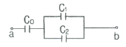
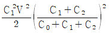
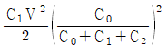
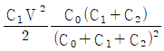
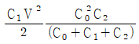
(정답률: 48%)
50. 공기 중에서 x방향으로 진행하는 전자파가 있다. Ey=3×10-2sinω(x-vt) (V/m), Ez=4×10-2sinω(x-vt) (V/m)일 때 포인팅 벡터의 크기(W/m2)는?
- 6.63×10-6sin2ω(x-vt)
- 6.63×10-6cos2ω(x-vt)
- 6.63×10-4sinω(x-vt)
- 6.63×10-4cosω(x-vt)
(정답률: 19%)
51. 와전류와 관련된 설명으로 틀린 것은?
- 단위체적당 와류손의 단위는 W/m3 이다.
- 와전류는 교번자속의 주파수와 최대자속밀도에 비례한다.
- 와전류손은 히스테리시스손과 함께 철손이다.
- 와전류손을 감소시키기 위하여 성층철심을 사용한다.
(정답률: 20%)
52. 진공 중에 +20 μC과 –3.2 μC인 2개의 점전하가 1.2m 간격으로 놓여 있을 때 두 전하 사이에 작용하는 힘(N)과 작용력은 어떻게 되는가?
- 0.2N, 반발력
- 0.2N, 흡인력
- 0.4N, 반발력
- 0.4N, 흡인력
(정답률: 74%)
53. 자계의 세기 H = xyay - xzaz(A/m)일 때 점(2, 3, 5)에서 전류밀도는 몇 A/m2 인가?
- 3ax + 5ay
- 3ay + 5az
- 5ax + 3az
- 5ay + 3az
(정답률: 60%)
54. 균일한 자속밀도 B중에 자기모멘트 m의 자석(관성모멘트 I)이 있다. 이 자석을 미소 진동시켰을 때의 주기는?
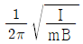
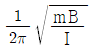
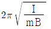
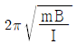
(정답률: 47%)
55. 평행판 콘덴서의 극간 전압이 일정한 상태에서 극간에 공기가 있을 때의 흡인력을 F1, 극판 사이에 극판 간격의 2/3 두께의 유리판(εr=10)을 삽입할 때의 흡인력을 F2라 하면 F2/F1는?
- 0.6
- 0.8
- 1.5
- 2.5
(정답률: 65%)
56. 내부도체의 반지름이 a(m)이고, 외부도체의 내반지름이 b(m), 외반지름이 c(m)인 동축 케이블의 단위 길이당 자기 인덕턴스 몇 H/m 인가?
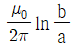
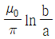
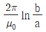
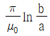
(정답률: 74%)
57. 무한장 선로에 균일하게 전하가 분포된 경우 선로로부터 r(m) 떨어진 P점에서의 전계의 세기 E(V/m)는 얼마인가? (단, 선전하 밀도는 ρL(C/m) 이다.)
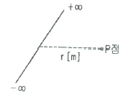
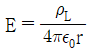
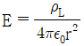
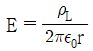
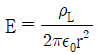
(정답률: 50%)
58. Ω·sec 와 같은 단위는?
- F
- F/m
- H
- H/m
(정답률: 54%)
59. 유전율 ε1, ε2 인 두 유전체 경계면에서 전계가 경계면에 수직일 때 경계면에 작용하는 힘은 몇 N/m2 인가? (단, ε1 ＞ ε2 이다.)
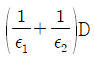
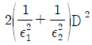
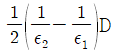
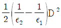
(정답률: 70%)
60. 0.2C의 점전하가 전계 E=5ay+az(V/m) 및 자속밀도 B=2ay+5az(Wb/m2) 내로 속도 v=2ax+3ay(m/s)로 이동할 때 점전하에 작용하는 힘 F(N)은? (단, ax, ay, az는 단위 벡터이다.)
- 2ax - ay + 3az
- 3ax - ay + az
- ax + ay - 2az
- 5ax + ay - 3az
(정답률: 62%)
4과목: 전력공학
61. 폐쇄 배전반을 사용하는 주된 이유는 무엇인가?
- 보수의 편리
- 사람에 대한 안전
- 기기의 안전
- 사고파급 방지
(정답률: 63%)
62. 다중접지 3상 4선식 배전선로에서 고압측(1차측) 중성선과 저압측(2차측) 중성선을 전기적으로 연결하는 목적은?
- 저압측의 단락 사고를 검출하기 위함
- 저압측의 접지 사고를 검출하기 위함
- 주상 변압기의 중성선측 부싱을 생략하기 위함
- 고저압 혼촉 시 수용가에 침입하는 상승전압을 억제하기 위함
(정답률: 64%)
63. 피뢰기의 직렬 갭(gap)의 작용으로 가장 옳은 것은?
- 이상전압의 진행파를 증가시킨다.
- 상용주파수의 전류를 방전시킨다.
- 이상전압이 내습하면 뇌전류를 방저하고, 상용주파수의 속류를 차단하는 역할을 한다.
- 뇌전류 방전 시의 전위상승을 억제하여 절연파괴를 방지한다.
(정답률: 58%)
64. 송전계통의 안정도를 향상시키는 방법이 아닌 것은?
- 직렬리액턴스를 증가시킨다.
- 전압변동을 적게 한다.
- 중간 조상방식을 채용한다.
- 고장전류를 줄이고, 고장구간을 신속히 차단한다.
(정답률: 67%)
65. 전력계통의 전압을 조정하는 가장 보편적인 방법은?
- 발전기의 유효전력 조정
- 부하의 유효전력 조정
- 계통의 주파수 조정
- 계통의 무효전력 조정
(정답률: 59%)
66. %임피던스에 대한 설명으로 틀린 것은?
- 단위를 갖지 않는다.
- 절대량이 아닌 기준량에 대한 비를 나타낸 것이다.
- 기기 용량의 크기와 관계없이 일정한 범위의 값을 갖는다.
- 변압기나 통기기의 내부 임피던스에만 사용 할 수 있다.
(정답률: 69%)
67. 66kV 송전선로에서 3상 단락고장이 발생하였을 경우 고장점에서 본 등가 정상임피던스가 자기용량(40MVA)기준으로 20%일 경우 고장전류는 정격전류의 몇 배가 되는가?
- 2
- 4
- 5
- 8
(정답률: 50%)
68. 선로고장 발생 시 고장전류를 차단할 수 없어 리클로저와 같이 차단 기능이 있는 후비보호 장치와 직렬로 설치되어야 하는 장치는?
- 배선용차단기
- 유입개폐기
- 컷아웃스위치
- 섹셔널라이저
(정답률: 75%)
69. 3000kW, 역률 75%(늦음)의 부하에 전력을 공급하고 있는 변전소에 콘덴서를 설치하여 역률을 93%로 향상시키고자 한다. 필요한 전력용 콘덴서의 용량은 약 몇 kVA 인가?
- 1460
- 1540
- 1620
- 1730
(정답률: 72%)
70. 역률 개선용 콘덴서를 부하와 병렬로 연결하고자 한다. △결선방식과 Y결선방식을 비교하면 콘덴서의 정전용량(μF)의 크기는 어떠한가?
- △결선방식과 Y결선방식은 동일하다.
- Y결선방식이 △결선방식의 1/2이다.
- △결선방식이 Y결선방식의 1/3이다.
- Y결선방식이 △결선방식의 1/√3이다.
(정답률: 65%)
71. 임피던스 Z1, Z2, 및 Z3를 그림과 같이 접속한 선로의 A쪽에서 전압파 E가 진행해 왔을 때 접속점 B에서 무반사로 되기 위한 조건은?
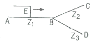
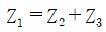
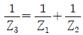
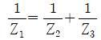
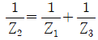
(정답률: 73%)
72. 전력선에 의한 통신선로의 전자유도장해 발생요인은 주로 무엇 때문인가?
- 지락사고 시 영상전류가 커지기 때문에
- 전력선의 전압이 통신선로보다 높기 때문에
- 통신선에 피뢰기를 설치하였기 때문에
- 전력선과 통신선로 사이의 상호인덕턴스가 감소하였기 때문에
(정답률: 62%)
73. 원자로의 냉각재가 갖추어야 할 조건이 아닌 것은?
- 열용량이 적을 것
- 중성자의 흡수가 적을 것
- 열전도율 및 열전달 계수가 클 것
- 방사능을 띠기 어려울 것
(정답률: 82%)
74. 조압수조의 설치 목적은?
- 조속기의 보호
- 수차의 보호
- 여수의 처리
- 수압관의 보호
(정답률: 46%)
75. 망상(network)배전방식의 장점이 아닌 것은?
- 전압변동이 적다.
- 인축의 접지사고가 적어진다.
- 부하의 증가에 대한 융통성이 크다.
- 무정전 공급이 가능하다.
(정답률: 69%)
76. 배전계통에서 전력용 콘덴서를 설치하는 목적으로 가장 타당한 것은?
- 배전선의 전력손실 감소
- 전압강하 증대
- 고장 시 영상전류 감소
- 변압기 여유율 감소
(정답률: 67%)
77. 정전용량 0.01 ㎌/km, 길이 173.2km, 선간전압 60kV, 주파수 60Hz인 3상 송전선로의 충전전류는 약 몇 A 인가?
- 6.3
- 12.5
- 22.6
- 37.2
(정답률: 62%)
78. 3상 송전선로의 각 상의 대지 정전용량을 Ca, Cb 및 Cc 라 할 때, 중성점 비접지 시의 중성점과 대지 간의 전압은? (단, E는 상전압이다.)
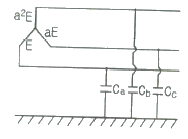
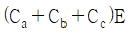
(정답률: 47%)
79. 접지봉으로 탑각의 접지저항값을 희망하는 접지저항값까지 줄일 수 없을 때 사용하는 것은?
- 가공지선
- 매설지선
- 크로스본드선
- 차폐선
(정답률: 72%)
80. 송전단 전압이 66kV, 수전단 전압이 60kV인 송전선로에서 수전단의 부하를 끊을 경우에 수전단 전압이 63kV가 되었다면 전압변동률은 몇 %가 되는가?
- 4.5
- 4.8
- 5.0
- 10.0
(정답률: 50%)